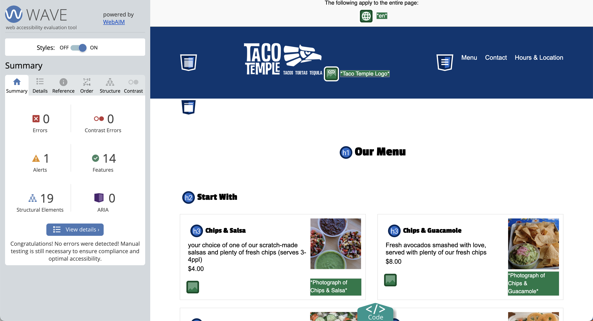
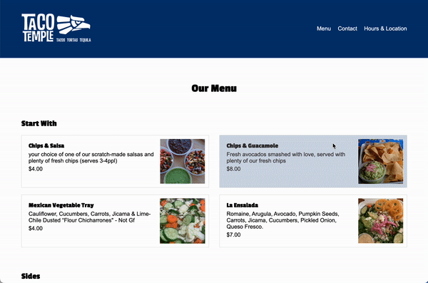
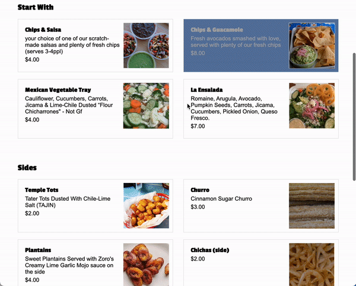

Quiz 2: Taco Temple Part II
Guidelines
- Read the instructions that are outlined under each section very carefully.
- Complete as many tasks as you can by the end of the quiz.
- Make your pages look as close to the screenshots / demos as possible.
- You may use your notes, any sample code, any prior work you’ve completed, and the Internet
- You may not communicate with anyone during the quiz.
- Partial credit given. Just do your best.
Set-Up
- Download the starter files and unzip them. They should be unzipped in a folder called
quiz02. - Move your
quiz02folder into yourcsci185/quizzesfolder. - Open your entire
csci185folder in VS Code.
Your directory structure should look something like this (it’s OK if your file structure looks different, so long as the quizzes folder looks like the one below):
csci185
├── homework
├── index.html
├── lectures
├── quizzes
│ ├── quiz01
│ └── quiz02
├── styles.css
└── tutorials
When you’re done with that, complete the Parts 1-7 as described below:
- (20pts) Header
- (15pts) Google Fonts
- (25pts) Main
- (10pts) Accessibility
- (10pts) Pseudo-classes transitions
- (15pts) Responsive layout
- (5pts) Link from your homepage
Your Tasks
Part 1. Header [20pts]
Make the header section look like the picture below, following the guidelines provided:
- [10pts] Use Flex
- [5pts] Links should be white with no underline
- [5pts] Don’t forget the spacing surrounding the image and navigation
Part 2. Fonts & Header Styling [15pts]
- [10pts] Use a custom font to style the
h1,h2, andh3tags. - [2.5pts] Center-align the
h1tag (Our Menu) - [2.5pts] Add some top margin to the
h1andh2tags.
When you’re done, the fonts should look like the ones pictured in Part 3.
Part 3. Main [25pts]
Within the main section of your HTML page, create layout shown below by following the guidelines:
- [12.5pts] The section with the class of “cards” should be a two-column grid (each column should be the same width).
- Hint: you’ll only need to specify the columns, not the rows, as the cards will be positioned into the next available grid cell by default.
- Note the spacing between columns and rows
- [12.5pts] Each section with a class of “card” should also be a two-column grid (the second column should be narrower than the first).
- Make sure you add a border around each card
- Make sure you apply some padding within each card
Part 4. Accessibility [10pts]
Use the WAVE browser extension to fix any accessibility errors. When you’re done, you should have no accessibility errors.
- You do NOT have to submit a screenshot of your accessibility report.
- You do have to correct all the errors.

Part 5: Pseudo-classes & Transitions [10pts]
Create a rule for all of the “card” sections so when you hover over them:
- [2.5pts] the text color turns white
- [2.5pts] the background color turns navy blue (
#013672)
[5pts] Ensure that the transition is smooth:

Part 6: Responsive Layout [15pts]
Create a media query that activates when the width of the screen is 800px or less. Within the media query, implement the following rules:
- [10pts] Overide the section with the class of “cards” so that it’s a one-column grid.
- [5pts] Target the
navelement and set its display to “none” so that the navigation does not display in the tablet or mobile views.
Part 7: Add a link from your homepage [5pts]
- Update your homepage by adding a link to the
index.htmlfile that you made in this quiz (and make sure you are using a relative link).
Submit to the Moodle
Before you submit
Verify that you’ve completed all 7 tasks and that you’re final Taco Temple menu page (mobile/tablet and desktop) looks as similar as possible to the animations (shown below):
Desktop Layout
Tablet / Mobile

Submit to the Moodle
Please Read Carefully: To submit Quiz 2, paste the following links into the Moodle under the Quiz 2 submission section:
- A link to your homepage on GitHub pages.
- A link to your GitHub code repository (where your code files are stored).
If your GitHub is not working for whatever reason, just zip your COMPLETED quiz02 folder and upload it to the Moodle.